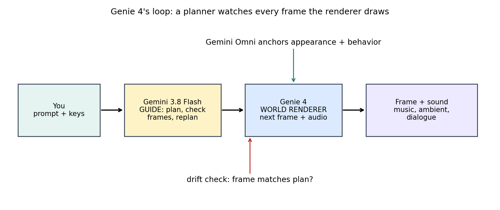
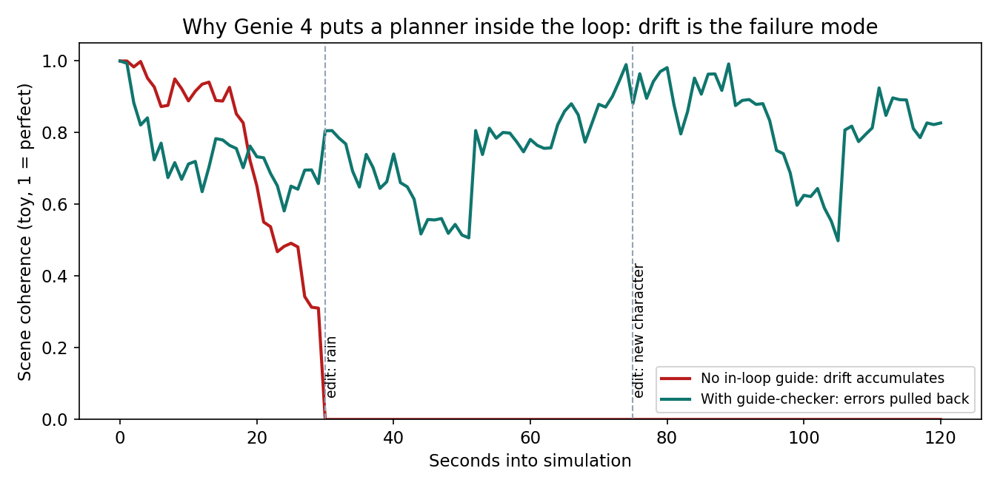
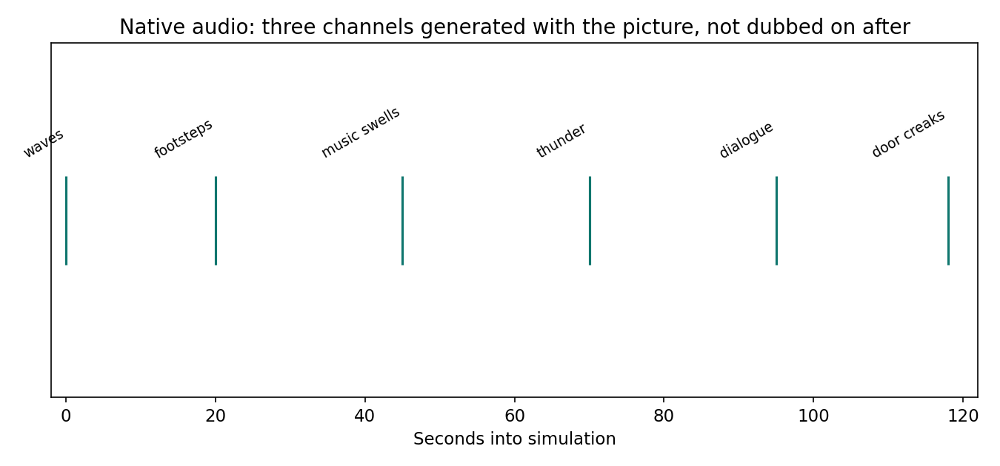
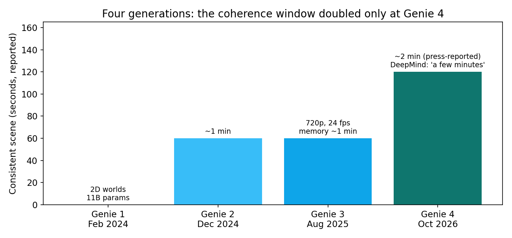

Type a sentence, get a world. Walk through it with your keyboard. Then type another sentence — "make it rain" — and the rain starts while you are standing in it. That is Google DeepMind's Genie 4, announced October 27, 2026 as a research preview for trusted testers. It is the lab's fourth world model in under three years, and the first one where the world talks back: music, ambient sound, and character dialogue are generated with the picture, not dubbed on afterwards. The headline number is a coherence window of roughly 2 minutes — double Genie 3's roughly 1-minute visual memory, as reported by TechCrunch. The honest version of that number matters more than the number itself: DeepMind's own text says only "a few minutes of continuous interaction," publishes no resolution, frame rate, or benchmark for Genie 4, and warns that details drift. Two minutes of world, then it forgets. That forgetting — and the planner DeepMind bolted inside the loop to fight it — is the real story.
The ELI5 version
A video generator is a film studio. You describe a scene, it renders a finished clip, and you watch it. Nothing you do mid-clip changes anything, because the clip is already done.
A world model is a game engine with no game. It renders one frame at a time, and each frame depends on what you just did — which key you pressed, where you looked, what you typed. Press forward and the next frame shows you one step ahead. Type "add a dog" and the next frames include a dog. The model has to remember what the world contains from frame to frame, or the dog changes breed, the room changes shape, and the rain you asked for falls upward. That memory is the whole hard problem. Genie 4's answer is to stop trusting the renderer alone: a second model watches every frame and corrects the course, like a director watching the monitor while the scene is still shooting.
How it works: the loop inside the loop
Genie 4 is not one model. It is a loop with a supervisor inside it.
First, you prompt it with text or an image, and it generates an explorable world in real time. You move with keyboard controls and steer with plain-language prompts mid-simulation: change the weather, move the camera, introduce a person or an object. Gemini — DeepMind says — adapts your prompt to fit the running scene, so "make it rain" becomes a change to this world, not a new world.
Second, Gemini Omni, the lab's multimodal video model, anchors the simulation in how things look and behave in the real world. That is the appearance-and-physics grounding: people who move naturally, collisions and aerodynamics that behave plausibly. DeepMind calls the human rendering its most dramatic leap over Genie 3.
Third, and most important, Gemini 3.8 Flash runs as a guiding agent inside the loop. As Genie 4 generates the world in real time, Gemini continuously observes the scene, breaks goals into a sequence of steps, reviews incoming frames to check each step succeeded, and replans when you intervene or the world shifts. In the robotics experiment DeepMind showed alongside the release, a Gemini model broke a task into steps that Genie 4 simulated in real time — a way to test robot scenarios in simulation before they happen in the real world. The same pattern — generator plus checker — is what makes the worlds usable for training agents at all: an unchecked world teaches an agent to navigate a dream that keeps changing its own rules.

That checker is doing real work, because drift is not a rare bug in world models. It is the default. Every generated frame is a prediction built on previous predictions, so small errors compound: a texture slips, an object moves a few pixels, a character's coat changes color. After enough frames the world has quietly become a different world. DeepMind is candid about it: visual details and object permanence can shift or drift over time, especially in longer sessions, after multiple complex prompt edits, or while navigating. Each prompt edit is a shock to the state — the model must hold everything else constant while changing one thing, and "everything else" is exactly what a frame-by-frame predictor is worst at holding.

The state of the art: what actually changed since Genie 3
The lineage makes the progress — and the limits — concrete. Genie 1 (February 2024) learned 2D worlds from unlabeled internet video at 11 billion parameters. Genie 2 (December 2024) made 3D worlds from a single image, consistent for up to about a minute. Genie 3 (August 2025) was the first real-time Genie: 720p at 24 frames per second, consistent for "a few minutes," with visual memory reaching back about a minute. Genie 4 adds three things on top of that base.
Native audio is the headline feature, and it is genuinely new for DeepMind. Genie 4 generates ambient sound, music, and interactive dialogue simultaneously with the visuals — characters converse and react to your inputs or events in the world, in real time. That turns a world from something you watch into something you can talk to. One caveat on the word "first": DeepMind calls Genie 4 its first real-time world model to generate audio natively, and Runway's GWM Worlds 2, released a couple of months earlier, is also playable and also generates audio. Treat "first" as the vendor's claim, not an established fact.

Live steering is the second change, and it is the one that changes the product. Genie 3 had "promptable world events." Genie 4 lets you type free-form changes mid-simulation and has Gemini adapt them to the scene. The difference is between triggering a scripted event and editing a running world. It is also the change most likely to break coherence, which is presumably why the guide agent arrived in the same release: steering without checking is just a faster way to drift.
Coherence doubled — on the press-reported number. TechCrunch reports a consistent scene of up to two minutes, double Genie 3's limit. DeepMind's own materials give no number, only "a few minutes," and the Genie 3 baseline is itself fuzzy: DeepMind described Genie 3 as consistent for a few minutes with memory of about one minute, and Project Genie capped each Genie 3 world at 60 seconds, partly for compute cost. So read "2×" as the direction of travel, not a measured benchmark. No independent test exists yet, and DeepMind published no resolution, frame rate, latency, or price for Genie 4 — Genie 3's 720p/24fps figures are the last hard specs in the lineage.

Access is gated, and that gating is part of the story. Genie 4 is a research preview for trusted testers, rolling out next to Google AI Ultra subscribers through Project Genie and to early-access partners of the Gemini API and Google AI Studio. Everything it emits carries SynthID, DeepMind's imperceptible watermark for AI-generated content. The world-model industry is consolidating around this exact moment — World Labs being acquired, Amazon in talks over Decart, Rivian buying simulation in-house — because whoever owns a reliable simulated world owns the cheapest training ground for robots and agents. Genie 4 is DeepMind's bid to stay ahead in that race, and its architecture — generator plus in-loop planner — is the pattern to copy even if you never touch the model itself.
The honest caveat — where this could break
Four things to keep in view. First, every capability claim so far comes from DeepMind itself. There are no published benchmarks, no independent evaluations, and no resolution or frame-rate specs for Genie 4. The 2-minute figure is TechCrunch's reporting, not DeepMind's documentation. Second, drift is acknowledged, not solved. Longer sessions, repeated complex edits, and navigation all still degrade the world; complex physics, accurate real-time audio, readable text, and spatial accuracy are listed as open research problems. Third, the "first with native audio" claim is contested by Runway's GWM Worlds 2 shipping playable worlds with audio months earlier. Fourth, the guide-agent pattern has a cost nobody has published: running a reasoning model to observe and check every frame, on top of the renderer, is presumably expensive — which may be exactly why Project Genie capped Genie 3 worlds at 60 seconds and why Genie 4's pricing and rate limits are still undisclosed.
Takeaways
- A world model is not a video generator. It renders one frame at a time, conditioned on your actions — a place you move through, not a clip you watch.
- Genie 4's real invention is the loop inside the loop. Gemini 3.8 Flash plans, checks each frame, and replans when you intervene; Gemini Omni grounds appearance and behavior. The renderer alone drifts; the checker is what holds the world together.
- Native audio changes the interaction, not just the immersion. Ambient sound, music, and dialogue generated with the picture mean characters can converse and react in real time — the world becomes something you can talk to.
- Coherence is still measured in minutes, not hours. Roughly 2 minutes of consistent scene (press-reported, double Genie 3's ~1-minute memory) is enough for a scene to develop — a character crossing a room, weather turning, a conversation going somewhere — and nowhere near a persistent world.
- Trust the architecture, verify the numbers. Generator-plus-checker is the pattern worth stealing for any agent or robot training loop; the 2-minute, "first," and realism claims all await independent testing.
- Check it yourself. The companion notebook simulates the whole loop in miniature — latent-state drift, prompt-edit shocks, a guide agent that detects and corrects, steering as state surgery, and the plan-check-replan cycle for robot training.